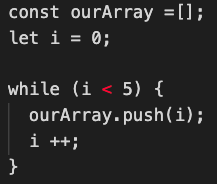
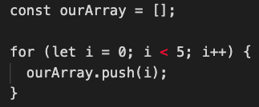

Where do I begin? Let's start with talking about a webpage. Imagine your favourite online shopping website. Your favourite website will have words, images, colors, a click button that brings you a payment section, etc. These elements are all a combination of JavaScript, HTML and CSS. HTML is just a blank page that could have not-so-fun styles of words, images, or colors. CSS comes in to make not-so-fun words, images, or colors into fun words, images, or colors. CSS designs the layout of whatever HTML contains. But now how about when you want to make a payment? You would click a box that says "Pay now" and pay for the product. When you click the button to finalise the payment, JavaScript comes in, interacts with the button and actually makes the button to finalise the payment.
Codes run from the first line of a file to the last file. This is called a control flow. Let me introduce a conditional structure that control flow plays an essential part of.

Above is an "IF ELSE statement". It's telling us that if the sum of a and b values are bigger than 10, it's going to tell us the sum is "bigger than 10!". After we put any random numbers into a and b and run the code, it's going to tell us the whether or not the sum is "bigger than 10!" or "smaller or equal to 10!"
How is this related to control flow? The codes are read from the first line - saying if a + b is bigger than 10 - then the second line - tell us "bigger than 10!". Or else tells us a + b is "smaller or equal to 10!" If I coded "else" first, WHAT ELSE?? THERE'S NO IF??? Yeah, exactly. The codes won't be read the way I want them to and will show me an error and this is why coding with a correct control flow is important.
I would describe control flow as a "normal" flow of something. For example, putting the dishes in the dishwasher. Normal flow would be you finish eating, put the plates into the dishwasher, start the dishwasher right? But if a correct control flow isn't used, you could be starting an empty dishwasher, put a fresh plate into the dishwasher and start eating. Which is not the correct order of doing the dishes.
And what are loops? Loops functions loop until a specific condition is met or "true" and stops once that condition is no longer applicable or "not true". Here's an example of while loop (on the left) and for loop (on the right)
 These two examples will show us the same thing: [0, 1, 2, 3, 4]. Let's go through the lines. In the while loop we have created an empty array and it i (index) to be equal to be zero. The array will now contain numbers by an increment by 1 from 0 and will stop when i becomes less than 5. For loop works the same as while loop. "let i = 0" literally means i will be 0, or the times i has been through the loop. "i < 5" means to stop when i becomes less than 5, and "i ++" means to increment i by value of 1.
An example of looping in an everyday life would be shuffling my liked songs on spotify. Say I have 10 songs in my playlist. It'll keep going through the songs and stop when there is no more that can be listened to.
DOM stands for Document Object Model. It is a programming interface for web documents, how you would want programming languages to interact with the page. There are a lot of ways to interact. For example, you can have the date and the time the document was last modified, replace words or the contect of a document, have the number of images or linked used in a document, you name it. I, as a student, use DOM to see how my page is going to look this or that without changing anything on the actual file.
Arrays are used to store a list of multiple items in a single variable. Counting the items starts from 0 in an array. For example, the position of a in an array called variable = ["a", "b", "c"] would be 0 and c would be 2. If we want to access b from the variable array, we simply access it by "variable[1]"", because the position of b in the variable array is 1.
Objects are used to represent a category. For example:
Here I have listed the food I want to have right now at 1am. I would access the data of kimchi by either "food.asian" or "food['asian']" and that will give me kimchi.
Functions play a big role in programming. Functions are essentially "procedures" and do literally what you tell it to do (given you coded with a correct control flow). If you need to calculate values or perform a task, you need functions to do that. Functions are used to break down a problem into smaller chunks. Say I'm writing a massive program and I want multiple things or tasks to use a same function. I would, first "make" a function and apply that to my tasks.